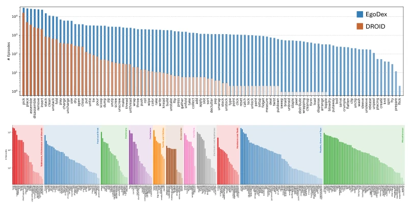
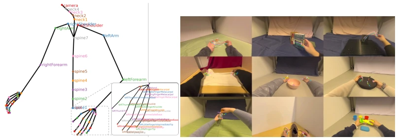
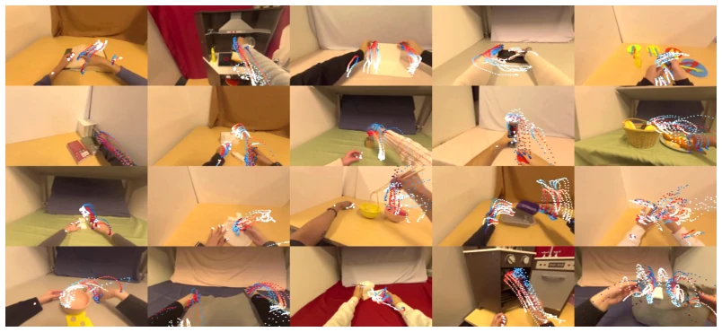
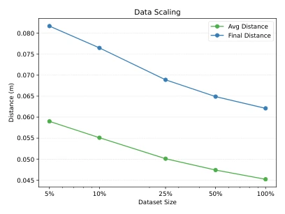
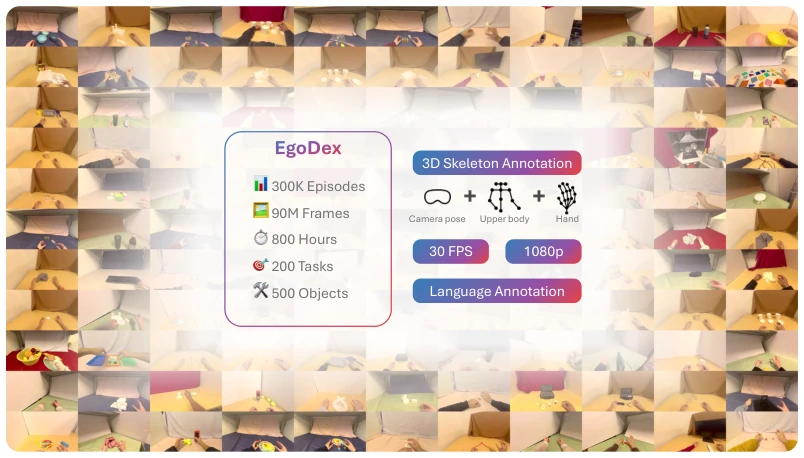
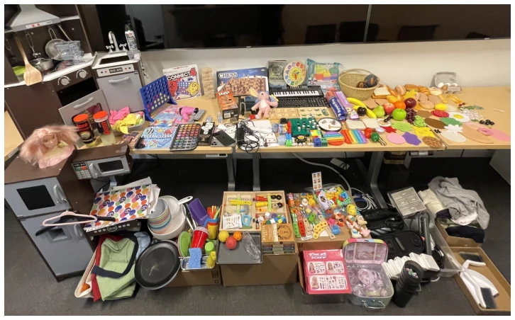

EgoDex: Learning Dexterous Manipulation from Large-Scale Egocentric Video
Ryan Hoque, Peide Huang, David J. Yoon, Mouli Sivapurapu, Jian Zhang abspdf
论文点评Review
苹果这次真下血本，EgoDex 号称史上最大灵巧操作数据集，829 小时视频配 3D 手骨，看着挺唬人。但“被动可扩展”这词儿用得有点飘，Vision Pro 毕竟不是人人都有，采集成本依然不低。而且场景全在桌面，离“世界模型”还差得远，毕竟没人拿 VR 头显去修马桶。不过对于灵巧手轨迹预测，这数据量确实能喂饱模型，至少比 DROID 的动词分布宽多了，为后续 VLA 和基础模型提供了新燃料。虽然标注依赖 ARKit 预测，在遮挡下可能不准，但作为基准数据集，它确实填补了互联网视频缺乏精细手部动作标注的空白，是具身智能领域的一次重要基建。
Apple truly invested heavily this time; EgoDex claims to be the largest dexterous manipulation dataset in history, with 829 hours of video paired with 3D hand skeletons, appearing quite impressive. However, the term "passively scalable" is used somewhat loosely, as not everyone has a Vision Pro, and collection costs remain not low. Moreover, all scenes are on desktops, far from a "world model," since no one uses VR headsets to fix toilets. However, for dexterous hand trajectory prediction, this data volume can indeed feed the model well, at least much wider than DROID's verb distribution, providing new fuel for subsequent VLA and foundation models. Although annotations rely on ARKit prediction and may be inaccurate under occlusion, as a benchmark dataset, it indeed fills the gap of lacking fine-grained hand action annotations in internet videos, representing an important infrastructure project in the field of embodied intelligence.
研究动机Motivation
具身智能的“苦味教训”是数据为王，但机器人模仿学习长期受困于数据稀缺。现有方案如 DROID (Khazatsky et al., 2024) 依赖遥操作，物理机器人和人力限制了规模扩展。Ego4D (Grauman et al., 2022) 虽大却缺乏精细的手部姿态标注，无法直接用于灵巧操作。互联网视频虽多，但缺乏与动作对应的精确标注。因此，需要一种既能规模化采集，又包含高精度 3D 手 pose 的 egocentric 数据源，以填补人类示范与机器人控制之间的鸿沟，推动“苦味教训”在机器人领域的落地。EgoDex 试图通过消费级 VR 设备解决这一痛点，但实际采集仍需人力参与，并非完全被动。
The "bitter lesson" of embodied intelligence is that data is king, but robot imitation learning has long been plagued by data scarcity. Existing solutions like DROID (Khazatsky et al., 2024) rely on teleoperation, where physical robots and human labor limit scale expansion. Ego4D (Grauman et al., 2022) is large but lacks fine-grained hand pose annotations, making it unusable directly for dexterous manipulation. Although internet videos are abundant, they lack precise annotations corresponding to actions. Therefore, there is a need for an egocentric data source that can be collected at scale and includes high-precision 3D hand pose, to fill the gap between human demonstration and robot control, promoting the implementation of the "bitter lesson" in the robotics field. EgoDex attempts to solve this pain point through consumer-grade VR devices, but actual collection still requires human participation and is not completely passive.

Figure 2: Distribution of EgoDex dataset. Top: Distribution of distinct verbs, sorted by frequency. The horizontal axis is verbs of EgoDex. The orange plot is taken from DROID (Khazatsky et al., 2024). While many verbs in DROID are below the 101 mark, most verbs in EgoDex are above the 103 mark. Bottom: Distribution of distinct objects. The clustering is suggested by GPT-4.
Data is collected via Apple Vision Pro, using ARKit to real-time track 3D hand and head joints, with resolution 1080p/30Hz. Action representation is designed as 48-dimensional, including dual wrist positions, 6D orientation, and 5 fingertip coordinates per hand. Baseline tasks are divided into dexterous trajectory prediction (forward dynamics) and inverse dynamics (visual goal condition). The policy model adopts a Transformer architecture, comparing Behavior Cloning (BC), Denoising Diffusion (DDPM), and Flow Matching (FM). In data preprocessing, GPT-4 is used to integrate natural language descriptions to ensure semantic consistency. Additionally, tasks are divided into reversible, no-reset, and reset-required categories to improve data utilization. Model training uses the X-IL framework, conducted on 8 A100s, verifying performance degradation under different prediction horizons. The choice of action representation directly affects the model's ability to capture dexterity, with the 48-dimensional vector covering key manipulation information.

Figure 3: Left: Joints captured by EgoDex. Right: Examples of dexterous manipulation behaviors. Tracked fingertips are highlighted in distinct colors and show 0.5 seconds of motion before the current frame. From left to right, top to bottom, the tasks are: unzipping a Ziploc bag, removing a book from a bookshelf, removing a screw from a fixture, folding a t-shirt, decluttering, opening a case, unscrewing a bottle cap, tying shoelaces, and washing a cup.
Tested on 14 models, adopting the "Best K-sampling" metric to evaluate multi-modal trajectories. Results show the Encoder-Decoder architecture outperforms Decoder-only; Flow Matching performs best when K>1, indicating it can better capture multi-modal distributions. After introducing visual goal condition, the final distance error reduced by 53%. Data scale experiments show performance improves with data volume increase, verifying the scaling law. However, long horizon prediction error increases significantly, and scene diversity remains limited to desktops. Model size experiments show medium-scale models are sufficient, with no need for ultra-large parameters. These results not only validate the dataset's effectiveness but also provide clear optimization directions for future policy learning, especially when handling multi-modal action distributions.

Figure 4: Model prediction visualizations for Dec + BC on test set images with a 2 second horizon. Blue trajectories are ground truth and red trajectories are predictions, where darker colors and closer to the current frame and lighter colors are further in the future. The points shown are the wrist and fingertip positions projected into the camera frame (a total of 12 trajectories).

Figure 5: Distance metrics w.r.t. training dataset size, where size is plotted on a log-scale. Perfor- mance improves as the dataset gets larger.
其他图片Other Figures

Figure 1: EgoDex is a large-scale egocentric dataset that focuses on human dexterous manipulation.

Figure 6: Some of the objects used in the various manipulation tasks.